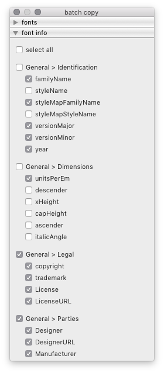
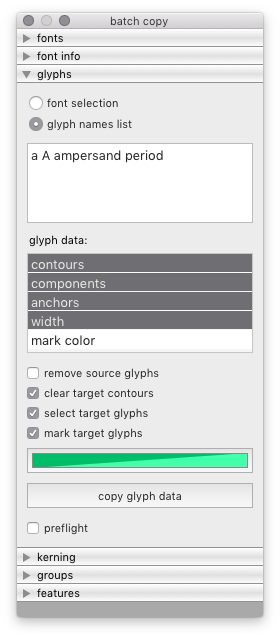

copy¶
The Copy tool is batch tool to copy data from one source font to a set of target fonts.
 
fonts
Use the fonts panel to select the source font and the target fonts.
font info
Use the font info panel to select font info attributes to copy data from the source font to the target fonts.
glyphs
Use the glyphs panel to adjust settings and copy glyph data from the source font to the target fonts.
kerning
Use the kerning panel to copy kerning data from the source font to the target fonts.
groups
Use the groups panel to copy groups data from the source font to the target fonts.
features
Use the features panel to copy OpenType feature code from the source font to the target fonts.
-
class
BatchCopyDialog[source]¶ Bases:
hTools3.dialogs.batch.base.BatchDialogBaseA dialog to copy data from one source font to all selected target fonts.
from hTools3.dialogs.batch.copy import BatchCopyDialog BatchCopyDialog()
-
title= 'batch copy'¶
-
key= 'com.hipertipo.hTools3.dialogs.batch.copy'¶
-
fontInfo= {'OpenType': {'vhea Table': ['openTypeVheaVertTypoAscender', 'openTypeVheaVertTypoDescender', 'openTypeVheaVertTypoLineGap', 'openTypeVheaCaretSlopeRise', 'openTypeVheaCaretSlopeRun', 'openTypeVheaCaretOffset'], 'name Table': ['openTypeNamePreferredFamilyName', 'openTypeNamePreferredSubfamilyName', 'openTypeNameCompatibleFullName', 'openTypeNameWWSFamilyName', 'openTypeNameWWSSubfamilyName', 'openTypeNameVersion', 'openTypeNameUniqueID', 'openTypeNameDescription', 'openTypeNameSampleText', 'openTypeNameRecords'], 'hhea Table': ['openTypeHheaAscender', 'openTypeHheaDescender', 'openTypeHheaLineGap', 'openTypeHheaCaretSlopeRise', 'openTypeHheaCaretSlopeRun', 'openTypeHheaCaretOffset'], 'OS/2 Table': ['openTypeOS2WidthClass', 'openTypeOS2WeightClass', 'openTypeOS2Selection', 'openTypeOS2VendorID', 'openTypeOS2Type', 'openTypeOS2UnicodeRanges', 'openTypeOS2CodePageRanges', 'openTypeOS2TypoAscender', 'openTypeOS2TypoDescender', 'openTypeOS2TypoLineGap', 'openTypeOS2WinAscent', 'openTypeOS2WinDescent', 'openTypeOS2SubscriptXSize', 'openTypeOS2SubscriptYSize', 'openTypeOS2SubscriptXOffset', 'openTypeOS2SubscriptYOffset', 'openTypeOS2SuperscriptXSize', 'openTypeOS2SuperscriptYSize', 'openTypeOS2SuperscriptXOffset', 'openTypeOS2SuperscriptYOffset', 'openTypeOS2StrikeoutPosition', 'openTypeOS2StrikeoutSize'], 'Panose': ['openTypeOS2FamilyClass', 'openTypeOS2Panose'], 'head Table': ['openTypeHeadCreated', 'openTypeHeadFlags', 'openTypeHeadLowestRecPPEM'], 'gasp Table': ['openTypeGaspRangeRecords']}, 'PostScript': {'Hinting': ['postscriptBlueValues', 'postscriptOtherBlues', 'postscriptFamilyBlues', 'postscriptFamilyOtherBlues', 'postscriptStemSnapH', 'postscriptStemSnapV', 'postscriptBlueFuzz', 'postscriptBlueShift', 'postscriptBlueScale', 'postscriptForceBold'], 'Identification': ['postscriptFontName', 'postscriptFullName', 'postscriptWeightName', 'postscriptUniqueID'], 'Dimensions': ['postscriptSlantAngle', 'postscriptUnderlineThickness', 'postscriptUnderlinePosition', 'postscriptIsFixedPitch', 'postscriptDefaultWidthX', 'postscriptNominalWidthX'], 'Characters': ['postscriptDefaultCharacter', 'postscriptWindowsCharacterSet']}, 'General': {'Note': ['note'], 'Identification': ['familyName', 'styleName', 'styleMapFamilyName', 'styleMapStyleName', 'versionMajor', 'versionMinor', 'year'], 'Dimensions': ['unitsPerEm', 'descender', 'xHeight', 'capHeight', 'ascender', 'italicAngle'], 'Legal': ['copyright', 'trademark', 'openTypeNameLicense', 'openTypeNameLicenseURL'], 'Parties': ['openTypeNameDesigner', 'openTypeNameDesignerURL', 'openTypeNameManufacturer', 'openTypeNameManufacturerURL']}}¶
-
attrsIgnorePrefix= {'OpenType': {'vhea Table': 'openTypeVhea', 'name Table': 'openTypeName', 'hhea Table': 'openTypeHhea', 'OS/2 Table': 'openTypeOS2', 'Panose': 'openTypeOS2', 'head Table': 'openTypeHead', 'gasp Table': 'openType'}, 'PostScript': {'Hinting': 'postscript', 'Identification': 'postscript', 'Dimensions': 'postscript', 'Characters': 'postscript'}, 'General': {'Legal': 'openTypeName', 'Parties': 'openTypeName'}}¶
-
glyphData= ['contours', 'components', 'anchors', 'width', 'mark color']¶
-
targetFonts¶ A list of all selected target fonts (excluding the source font).
-
sourceFont¶ The selected source font.
-
selectedAttributes¶ A list of selected font info attributes.
-
glyphNames¶ A list of selected glyph names.
-
selectedGlyphData¶ A list of selected glyph data types.
-
glyphDataOptions¶ A list of selected glyph options.
-